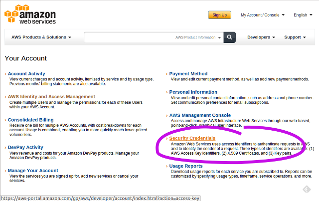
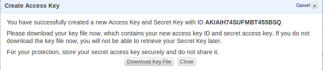

Configuring for Amazon AWS
This process requires you to have an Amazon Web Services (AWS) account. If you have not signed up for one yet, it can obtained at http://aws.amazon.com.
You should start by generating a generic configuration file for Juju, using the command:
juju generate-config
This will generate a file, environments.yaml, which will live in your ~/.juju/ directory (and will create the directory if it doesn't already exist).
Note: If you have an existing configuration, you can use juju generate-config --show to output the new config file, then copy and paste relevant areas in a text editor etc.
The generic configuration sections generated for AWS will look something like this:
## https://juju.ubuntu.com/get-started/amazon/ amazon: type: ec2 admin-secret: 772b97c4c31c6b5883475e396d9a6d32 # globally unique S3 bucket name control-bucket: juju-a29403f89d8223343d3cab01f1ca5a4d # override if your machine is on a different series than what you're deploying # default-series: precise # region defaults to us-east-1, override if required # region: us-east-1 # Usually set via the env variable AWS_ACCESS_KEY_ID, but can be specified here # access-key: <secret> # Can be set via the env variable AWS_SECRET_ACCESS_KEY, or specified here # secret-key: <secret>
This is a simple configuration intended to run on EC2 with S3 permanent storage. Values for the default setting can be changed simply by editing this file, uncommenting the relevant lines and adding your own settings. All you need to do to get this configuration to work is to either set the AWS_ACCESS_KEY_ID and AWS_SECRET_ACCESS_KEY via environment variables, or uncomment and add the values to the configuration file.
You can retrieve these values easily from your AWS Management Console at http://console.aws.amazon.com. Click on your name in the top-right and then the "Security Credentials" link from the drop down menu.
Under the "Access Keys" heading click the "Create New Root Key" button. You will be prompted to "Download Key File" which by default is named rootkey.csv. Open this file to get the access-key and secret-key for the environments.yaml configuration file.
The region: value corresponds to the AWS regions.